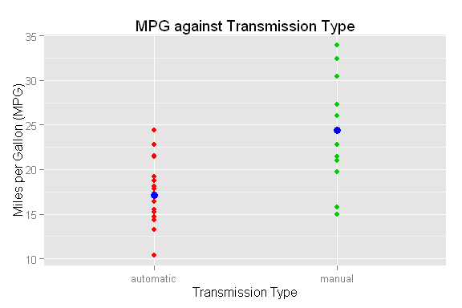

Executive Summary
This analysis explores the relationship between the transmission type of cars and the affect this has on fuel efficiency, measured in Miles per gallon (MPG). In particular the analysis needs to address the following points:
- Is an automatic or manual transmission better for MPG?
- Quantify the difference in MPG between manual and automatic transmissions
To answer the above questions the analysis will first look into the basic statistical properties of the data using mean and standard deviation to gain a general idea of trends. Followering this a more detailed statitical analysis will include the fitting of linear models which can be used to predict future values within a level of confidence.
Exploring the Data Set
We are looking at the mtcars dataset provided in R, so let’s load it and have a look.
## mpg cyl disp hp drat wt qsec vs am gear carb
## Mazda RX4 21.0 6 160 110 3.90 2.620 16.46 0 1 4 4
## Mazda RX4 Wag 21.0 6 160 110 3.90 2.875 17.02 0 1 4 4
## Datsun 710 22.8 4 108 93 3.85 2.320 18.61 1 1 4 1
## Hornet 4 Drive 21.4 6 258 110 3.08 3.215 19.44 1 0 3 1
## Hornet Sportabout 18.7 8 360 175 3.15 3.440 17.02 0 0 3 2
## Valiant 18.1 6 225 105 2.76 3.460 20.22 1 0 3 1
We can see from the above table there is much information in each record, but for our analysis we are only interested in the mpg and am columns. The am data is a boolean value signifying if the transmission type is manual (1) or automatic (0). For ease of later analysis, we shall convert this in a factor variable.
## Source: local data frame [2 x 3]
##
## trans mean sd
## 1 automatic 17.14737 3.833966
## 2 manual 24.39231 6.166504
The plot in appendix A shows the recorded MPG by transmission type. By observation it can be seen that for cars with automatic transmission the MPG is generally lower than that of manual cars. Also the range of MPG values for automatic cars is much smaller (more concentrated) than that of manual cars. The blue point for each transmission type represents the mean value of the data. The mean MPG for cars with automatic transmission is 17.147 MPG and the mean for manual cars is 24.392 MPG, which confirms the trend of higher MPG for manual cars. To qualtify the spread of the data we can look at the standard deviation from the mean. The standard deviation of automatic cars is 3.834 MPG which is lower than that for manual cars of 6.167 MPG, which indicates a range of values closer to the mean.
Fitting a Linear Regression Model
It makes no sense to create a linear regression of MPG and transmission type as the predictor is a discrete quantity. A linear regression line would draw between the two discrete values, an area which is undefined. If we treat the transmission type as two separate groups, the best linear model will be a constant, namely the mean of the group, \(\beta_0 = \mu\), and \(\beta_1\) (the slope) will be undefined. Thus we must look for more significant predictors to MPG.
Attribute Correlations
It is logical that more attributes will affect MPG than just transmission type. Now lets look for strong correlations between other attributes and MPG using the corr() function.
## attr corr
## 1 mpg 1.0000000
## 2 wt -0.8676594
## 3 cyl -0.8521620
## 4 disp -0.8475514
## 5 hp -0.7761684
## 6 drat 0.6811719
## 7 vs 0.6640389
## 8 am 0.5998324
## 9 carb -0.5509251
## 10 gear 0.4802848
## 11 qsec 0.4186840
The output above shows that many attributes have a stronger affect on MPG than transmission type (am), namely weight, cylinders, displacement, horse power. This would suggest that a multivariate regression model would better predict the possible MPG of a vehicle, with predictors of weight, cylinders, displacement and horse power. Lets look into this further. (See appendix B for the code for the above calculation and a pairs plot for illustration)
Appendix A - Code & Plot of MPG vs Transmission
dat <- mtcars %>% select(mpg, am)
## adding a new column with am variable as a factor
dat <- dat %>% mutate(trans = factor(am, labels = c("automatic", "manual")))
g1 <- ggplot(dat, aes(x = trans, y = mpg)) + geom_point(color = dat$am+2)
g1 <- g1 + labs(title = "MPG against Transmission Type") + labs(x = "Transmission Type") + labs(y = "Miles per Gallon (MPG)")
## calculating some basic stats
stats <- dat %>% select(mpg, trans) %>% group_by(trans) %>% summarise_each(funs(mean, sd))
stats
## adding the stats as reference points on plot
g1 <- g1 + geom_point(data = stats, aes(x = trans, y = mean), color = "blue", size = 3)

Appendix B - Code Calculating Correlations between Attributes
## calculating correlations of the data
foo <- cor(mtcars, mtcars$mpg)
corrs <- data.frame(attr = rownames(foo), corr = foo[,1])
## arranging into order of significance by ABS value to preserve relationship (positive or negative)
corrs <- arrange(corrs, desc(abs(corr)))
corrs
## selecting column numbers
col_nums <- as.numeric(order(desc(abs(foo))))
## creating pairs plot
ggpairs(select(mtcars, col_nums[1:5]), title = "Pairs plot of most Significant Attributes towards MPG")